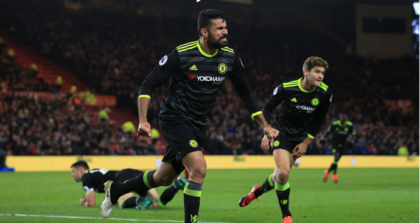
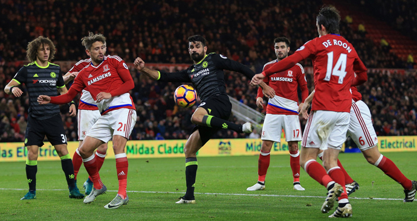
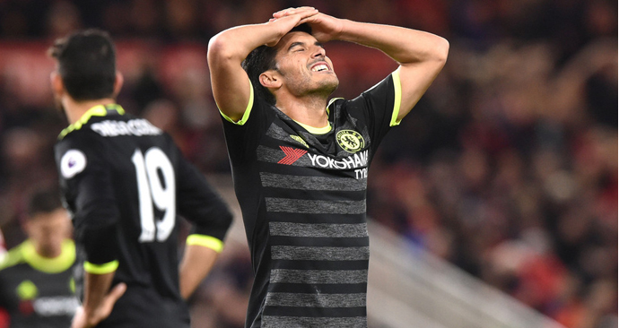

切尔西六连胜登顶科斯塔破门
科斯塔破门佩刀中框
21日凌晨,17赛季英超联赛第12轮的一场比赛 在河畔球场进行切尔西在客场挑战米德尔斯堡。 迭戈-科斯塔帮助蓝军打入比赛唯一进球,佩德 罗则击中横梁,最终,切尔西客场1-0取胜,拿 到英超六连胜积分反超利物浦.排名上升到积分 榜的第一位。

迭戈-科斯塔打入关键一球
在历史上切尔西和米德尔斯堡有着114次交锋, 切尔西取得了54胜29平31负的战绩。两队上一 次交锋是在2012年13赛季的足总杯16强战，当 时蓝军2-0击败对手,英超前11轮，切尔西取得 了8胜1平2负的战绩,25分排名积分榜第2位。 米德尔斯堡取得了1胜5平的战绩积11分排名积 分榜的第15位,孔蒂继续3-4-3阵型，米堡则是 4-5-1阵型应对。
米德尔斯堡反击,德隆禁区外射门被挡了一下, 禁区里内格雷多再射偏出。随后切尔西打出配 合,科斯塔禁区外远射被米堡后卫挡出。第14 分钟，切尔西进攻,阿扎尔左路拿球，横传给 科斯塔却被抢断,错失大好进攻机会第16分钟， 马蒂奇转移球摩西右路横传门前被挡出了底线。


文章来源：新浪体育足球天下